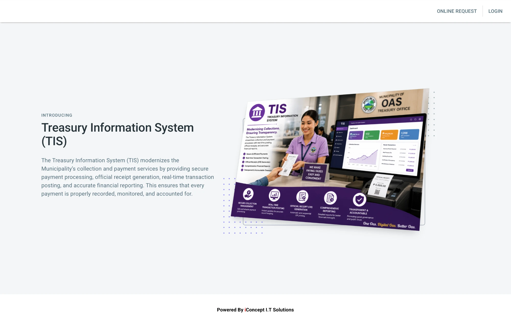

Municipality of Oas, Albay
Treasury Information System (TIS)
User Manual

Prepared by iConcept IT Solutions
Section 1
Admin
The Admin menu is where the administrator of TIS manages the people who use the system. It has two pages: Users and Roles. This section explains each page and each button on it.
Who can use this section. The Admin menu appears for an account whose role is Admin. The other roles (Cashier, AF Issuer, Brgy Treasurer and Disbursing Officer) see their own menus and do not see Admin.
1.1 The Admin menu
After you sign in as Admin, the page title at the top left reads Admin. Click the menu icon (three lines) beside it to open the sidebar. The sidebar shows your name and email, and these groups: Transaction, Referential, Process, Reports and Admin. Exit at the bottom signs you out.
Click Admin to open its pages:
- Users: the accounts of the people who sign in. See Section 1.2.
- Roles: the list of roles that an account can have. See Section 1.3.
Figure 1.1. The sidebar with the Admin group open. 1 Admin group · 2 The pages under Admin. The name and email are covered.
1.2 Users
Click Users to see every account in TIS. The table shows the number, the Fullname (last name, then first name), the Role and the Action icons of each user.
Figure 1.2. The Users page. 1 Search box · 2 Add User · 3 Table headings · 4 Action icons of a user. The names are covered.
- Search: type a name to find a user. See Section 1.2.1.
- Add User (the person icon with a plus sign): opens the form for a new user. See Section 1.2.2.
- The table headings are Fullname, Role and Action.
- The three Action icons of a user, from left to right: Assigned RPT (circle with a plus sign), Assigned Personnel (circle with a plus sign) and Edit (the pencil). Point to an icon to see its name. See Sections 1.2.4 to 1.2.6.
1.2.1 Finding a user
Type part of the first name or the last name in the Search box. The table shows only the users that match. Type the name in small letters. Clear the box to see all users again.
The table lists all the users in one long list. Scroll down to see the end of the list. The paging line below the table (List 10, 1-10 of 19) shows the number of users in the system.
The List box beside it is a drop-down. Click it to choose how many rows the paging line counts: 10, 20 or 50.
Figure 1.3. The List drop-down with its three choices. 1 The choices 10, 20 and 50 · 2 The count of users. The names are covered.
Figure 1.4. The end of the Users list. 1 The paging line with the total number of users. The names are covered.
1.2.2 Adding a user
- On the Users page, click Add User (the person icon at the top right).
- In the window USER INFORMATION, fill in Firstname, Lastname, Contact Number, Email and Password.
- Select the Role of the user from the list.
- Click Create.
Figure 1.5. The Add User window. 1 The user's details · 2 Role · 3 Create.
Click the Role box to open its drop-down list. The choices are Brgy Treasurer, Cashier, Admin, Customers, Disbursing Officer and AF Issuer. The same list appears when you edit a user.
Figure 1.6. The Role drop-down list of the Add User window. 1 The six roles. The names in the table behind are covered.
When you leave a required box empty, its border turns red and the word Required appears below it. Fill in the box to clear the message. You cannot save the user until every required box is filled in.
Figure 1.7. The Required messages of the Add User window. 1 The boxes that were left empty. The names in the table behind are covered.
- Every box is required. A box that you leave empty shows Required.
- The Email must be a valid email address. The user signs in with this email.
- The Password box shows the letters as you type them. Make sure that nobody is watching, and give the password to the user in private.
- The Role decides which menu the user sees after signing in. See Section 1.3.
After you click Create, the message User created successfully appears and the new user is in the list.
1.2.3 Closing a window without saving
Press the Esc key or click the gray area outside a window to close it. Nothing is saved until you click Create, Update or Add in that window.
1.2.4 Editing a user
- On the Users page, click the Edit icon (the pencil) of the user.
- The window Editing and the name of the user opens with the current details. Change Firstname, Lastname, Contact Number, Email or Role.
- To give the user a new password, type it in the Password box under User Credentials. To keep the present password, leave the box empty.
- Click Update.
Figure 1.8. The Edit User window. 1 The user's details · 2 Role · 3 Password and its note · 4 Update. The details are covered.
After you click Update, the message User updated successfully appears. If you changed the role, the user sees the menu of the new role the next time the user signs in.
1.2.5 Assigning RPT users
Click the first circle icon, Assigned RPT, to see the RPT users that are linked to this TIS user. Each row shows the code and the name of an RPT user. These links decide which RPT users the TIS user can choose in the filter of the Report of Collection and Deposits (RCD).
How assigned RPT users relate to users.
A user of TIS
(the row you clicked in the Users list) | → | Assigned RPT
(the link) | → | An RPT user
(a code and a name from the RPT payment system) |
- One user, many RPT users. A user can have several assigned RPT users. The same RPT user can be assigned to more than one user. The RPT users are not TIS users. They come from the RPT payment system, so you cannot add or change them here, only link them.
- The link belongs to the user. Adding or removing a link changes only that user. It does not change the RPT user or the other users.
- What it controls. In Reports, Report of Collection and Deposits (RCD), the window that imports real property tax receipts has the boxes Date From, Date To and Encoded By. The Encoded By list shows only the RPT users that are assigned to the signed-in user. TIS then brings in the RPT receipts that the chosen RPT user encoded in those dates.
- With no link. A user with no assigned RPT user sees No assigned RPT users in the Encoded By list and cannot import RPT receipts.
Figure 1.9. The Assigned RPT window. 1 Add RPT User · 2 The RPT users that are assigned · 3 Remove icon. The names in the table behind and the RPT names are covered.
- Click Add RPT User.
- In the window Assign RPT User, select the RPT User from the list. The list shows the code and the name of each RPT user.
- Click Add.
Figure 1.10. The Assign RPT User window. 1 The RPT User list · 2 Add.
Click the RPT User box to open its drop-down list. It starts with a dash (-), which means that nobody is chosen, and then shows every RPT user as the code, a dash and the name. Choose one, then click Add.
Figure 1.11. The RPT User drop-down list. 1 The RPT users, each shown as code - name. The names are covered.
The message RPT user assigned successfully appears. To remove a link, click the remove icon at the end of its row. A question asks Are you sure to delete this assigned RPT user? Click Yes to remove it or No to keep it. A list with no row says No record found!
Figure 1.12. The question before an assigned RPT user is removed. 1 The question · 2 No keeps the link · 3 Yes removes it. The names are covered.
1.2.6 Assigning personnel
Click the second circle icon, Assigned Personnel, to see the officers that are linked to this user. Each row shows the name, the code and the type of the officer, such as Accountable Officer, Collector or Liquidating Officer. These links decide which receipts the user may process and which collectors the user can choose. The block below explains how. The officers themselves come from the Referential page Liq. Disb. Collector.
How assigned personnel relate to users.
A user of TIS
(the row you clicked in the Users list) | → | Assigned Personnel
(the link) | → | An officer
(a name, a code and a type from the LiqDisb Collector page) |
- One user, many officers. A user can have several assigned officers, for example a collector and the accountable officer. The same officer can be assigned to more than one user. The officers are kept on the Referential page LiqDisb Collector (Section 2.6.6). Here you only link them.
- The link belongs to the user. Adding or removing a link changes only that user. It does not change the officer or the other users.
- What it controls on the receipt pages. On the permit receipt pages (for example Business Permit, Building Permit and Burial Permit), the user enters a receipt number. TIS accepts the receipt only when its collector is one of the user's assigned personnel. For any other receipt, the window You are not allowed to proccess this personnel. appears (the system spells it this way).
- What it controls in RCD Processing. The Collector list offers only the assigned personnel whose type is Collector, each shown as the name and the code.
- With no link. A user with no assigned personnel has no collector to choose and is not allowed to process a receipt on these pages.
Figure 1.13. The Assigned Personnel window. 1 Add Personnel · 2 The name, the code and the type of each officer · 3 Remove icon. The names and codes are covered.
- Click Add Personnel.
- In the window Assign Personnel, select the Personnel Officer from the list.
- Click Add.
Figure 1.14. The Assign Personnel window. 1 The Personnel Officer list · 2 Add. The names behind the window are covered.
Click the Personnel Officer box to open its drop-down list. It starts with a dash (-) and then shows the name of every officer in the Liq. Disb. Collector list. Choose one, then click Add.
Figure 1.15. The Personnel Officer drop-down list. 1 The officers that can be assigned. The names are covered.
The message Personnel added successfully appears. To remove an officer, click the remove icon at the end of its row. A question asks Are you sure to delete this personnel? Click Yes to remove the officer or No to keep it. The message Personnel deleted successfully confirms it.
Figure 1.16. The question before an assigned personnel is removed. 1 The question · 2 No keeps the officer · 3 Yes removes it. The names are covered.
The assigned officers are loaded when the user signs in. If you change them for a user who is signed in, ask the user to sign out and sign in again.
1.3 Roles
Click Roles to see the roles that an account can have. The table shows the number and the name of each Role, and an Edit icon in the Action column. The roles in the system are Brgy Treasurer, Cashier, Admin, Customers, Disbursing Officer and AF Issuer.
Figure 1.17. The Roles page. 1 Search box · 2 Add Role · 3 The roles · 4 Edit icons · 5 The paging line.
Important. The sidebar of a user is chosen by the exact name of the role. Cashier, AF Issuer, Brgy Treasurer, Disbursing Officer and Admin each have their own menu. If you rename one of these roles, the users of that role no longer get their menu. Do not rename a role that users already have. The page has no Delete icon.
The List box under the table works as it does on the Users page. It offers 10, 20 or 50.
1.3.1 Adding a role
- Click Add (the person icon at the top right of the Roles page).
- In the window ROLE INFORMATION, type the Name of the role. It is required.
- Click Create.
Figure 1.18. The Add Role window. 1 Name · 2 Create.
The message Role created successfully appears. The new role is then in the Role list of the Add User and Edit User windows. A new name does not have its own menu yet. A user with a new role signs in but sees no menu until the system is set up for that role.
1.3.2 Editing a role
- Click the Edit icon of the role.
- In the window Editing and the role name, change the Name.
- Click Update. The message Role updated successfully appears.
Figure 1.19. The Edit Role window. 1 Name · 2 Update.